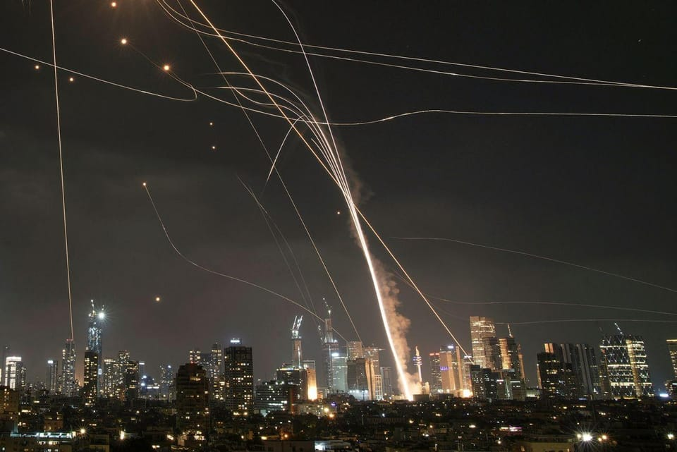

世界苦茶06月14日新闻 | 27条 | 以色与伊朗攻击进一步升级

以色与伊朗攻击进一步升级 | 5月中国社融依然依靠政府债 | 台湾判处中国切割电缆船长有期徒刑 | 湖南湘雅医院坠亡案引发争议 | Meta确认投资ScaleAI
每天三件事：
苦茶数据
美元兑人民币：7.18（昨日7.18，前日7.18）
美元兑日元：144.14（昨日143.53，前日143.93）
上证指数：休市（昨日3377，前日3404）
标普500指数：休市（昨日5976，前日6045）
比特币：105053（昨日103937，前日107751）
布伦特原油：74.23（昨日74.51，前日69.46）
中国新闻
• 新西兰总理将访华 ：中国外交部宣布新西兰总理拉克森将于下周访华，表示两国要加强战略沟通，增进政治互信，深化务实合作。中国外交部发言人林剑星期五在例行新闻发布会上宣布，应中国总理李强邀请，拉克森将于6月17日至20日对中国进行正式访问。林剑说，这是拉克森就职新西兰总理以来首次访华，正值两国全面战略伙伴关系开启第二个10年。访问期间，中国领导人将同拉克森分别举行会见、会谈，就两国关系和共同关心的国际和地区问题深入交换意见。
• 中印同意加快恢复直航 ：中国和印度同意加快恢复两国之间的直航航班，并继续重建和稳固双边关系。据印度外交部星期五在官网发布的消息，中国外交部副部长孙卫东星期四到印度进行为期两天的访问，并与印度外秘唐勇胜会面。该文指，双方达成共识，同意推进恢复中国和印度间直航航班，以及采取措施促进两国媒体人员和智库的交流。
• 中国代表强调政治解决伊核 ：中国常驻国际原子能机构代表李松说，政治外交努力是妥善解决伊朗核问题的唯一正确途径。综合新华网和路透社报道，联合国国际原子能机构理事会星期四在维也纳通过一项决议，认定伊朗未履行核不扩散义务。中国代表李松在会议上发言时指出，伊核问题延宕20余年，最宝贵的历史经验是，政治外交努力是妥善解决伊核问题的唯一正确途径；最重要的历史教训是，一味对抗施压、破坏国际协议只会使问题进一步复杂化。
• 罗帅宇坠亡调查细节披露 ：湖南省通报湖南湘雅二医院实习医生罗帅宇坠亡事件。2024年5月8日，罗帅宇在住宿楼坠亡，警方初步认定排除他杀。家属讲述，在罗帅宇被删除的个人电脑数据中，有多笔可疑的转账记录以及涉及医院内部人员涉嫌违法犯罪的举报材料。调查组13日公布调查结果，判定罗帅宇系独自一人到达楼顶，自主攀爬翻越围墙到达平台，后从镂空孔洞内跳出，坠落至地面后，反弹至尸体发现位置。认定其系跳楼自杀死亡，排除刑事案件。就“医院买卖器官”的举报，所有捐献未发现违法违规行为。“3-5岁、6-9岁的男女各3例标本”系科研合作所需，研究内容合法合规。就“罗帅宇因举报刘翔峰而遭迫害”的举报，未查询到两人同台手术的记录，未查询到罗帅宇举报刘翔峰的记录，相关部门也未向其了解情况。通报还指，罗帅宇向两名同事发短信叮嘱“如果我明天没上班，就把电脑里的文件交给纪委”的说法系不实信息。公安机关未对罗帅宇笔记本电脑数据资料进行修改或删除。此外，肾脏移植科违反医院相关规定，存在将部分绩效先发放至多名研究生账户，再转至个别职工账户的现象，已责令医院整改。通报称，罗帅宇读研期间成绩靠后，第一次未通过执业医师资格考试，错过学校集中毕业论文送盲审时间，毕业未找到工作，与同学室友交流变少。律师代表家属曾向医院提出巨额补偿要求被拒。家属拒绝接受联合调查组的调查结果通报。公安机关对家属提出的刑事立案调查申请不予立案，复议复核后维持原决定。
• 国务院研究药品集采与房地产 ：6月13日的国务院常务会议，研究举措优化药品和耗材集采。完善公立医院补偿机制，支持医药企业提高创新能力，更好满足群众多元化就医用药需求。加强全链条质量监管，扎实推进仿制药质量和疗效一致性评价。会议还听取房地产市场汇报，要求对全国房地产已供土地和在建项目进行摸底，进一步优化现有政策，多管齐下稳定预期、激活需求、优化供给、化解风险。会议还部署上海自贸区试点措施复制推广，审议通过《关于进一步完善信用修复制度的实施方案》 。
亚太印太新闻
• 柯文哲涉案延押至八月 ：台北市前市长柯文哲等涉京华城案，日前再被裁定延押两个月，台湾高等法院星期四驳回柯文哲等的不服抗告。综合ETtoday新闻云、中天新闻网和镜新闻等报道，民众党前主席柯文哲、威京集团主席沈庆京、台北市议员应晓薇、众望基金会董事长李文宗涉京华城案被起诉，羁押已约九个月，6月2日再被裁定延押两个月，四人提抗告结果星期四出炉。台高院驳回四人的抗告，四人确定延押至8月。高院指出，检方起诉指控柯文哲等四人涉犯违背职务收贿、公益侵占、背信或行贿等罪，犯罪嫌疑重大，台北地方法院审酌四人供述、争执事项、证据调查进度后，认定仍有逃亡、串证、灭证之虞，其羁押原因仍在，日前裁定四人均应延押禁见两个月，并无违法或不当。
• 台判陆船长破坏电缆三年刑 ：一艘具有陆资背景、悬挂多哥籍的权宜船“宏泰58号”今年2月涉嫌在台湾海域拖断海底电缆，中国大陆籍船长被判刑三年，成为台湾首宗因破坏海底电缆而被刑事定罪的案件。综合台湾《中国时报》和公视新闻网报道，台南地方法院星期四对此案作出判决，认定王姓船长违反《电信管理法》，故意损毁海底通信电缆“台澎3号”，判处他三年有期徒刑。案件起于今年2月25日凌晨，“宏泰58号”货轮在台湾南部海域违规下锚并滞留多日。台湾海巡署发现后将其驱离，仅16分钟后，连接台湾本岛与澎湖外岛的通信电缆“台澎3号”即通报断裂。由于事发海域当时并无其他船只出没，海巡单位随即将“宏泰58号”与船上人员依现行犯扣留，并移送检调单位调查。
• 杜特尔特申请临时释放 ：菲律宾前总统杜特尔特向海牙国际刑事法院申请暂时释放到一个第三方国家。杜特尔特代表律师考夫曼星期四正式向国际刑事法院提交暂时释放的申请书，理由是现年80岁的杜特尔特年事已高，并承诺不会潜逃或进一步犯下任何罪行。根据公开的申请文件，如果杜特尔特暂时获释，有一个外国政府“原则上同意接受杜特尔特进入其领土”。不过，文件删除了该国的名称。 （翻评：中国？可能性不是特别大。）
• 印航空难调查聚焦技术故障 ：一名消息人士星期五说，印度航空空难的调查重点是发动机、襟翼和起落架。印度航空监管机构已下令对印航波音787机队进行安全检查。路透社报道，一名直接了解情况的消息人士告诉路透社，印航和印度政府正在调查坠机事故的几个方面，包括与发动机推力、襟翼，以及起落架在飞机起飞时保持打开状态并在片刻后坠毁的原因相关的问题。消息人士称，还会调查印航是否有过错，包括维护问题。
• 缅甸军机坠毁致四死 ：当地官员星期五说，一架缅甸军政府飞机本周在战区坠毁，撞入一座平民躲避战火的村庄，造成四人死亡。法新社报道，反政变游击队声称，经过四天激烈的战斗，他们星期二在中部实皆省击落了这架飞机，而军政府则称飞机坠毁是因为“发动机突然故障”。叛军控制区的当地行政长官佐泰特说，飞机在撞击过程中摧毁了萨帕赛特村的五座建筑物，造成四人死亡。
• 柬泰边境紧张禁播泰剧 ：柬埔寨星期五下令军队保持“全面戒备”，并禁止电视台播放泰剧。泰柬两国的边境争端仍在继续。法新社报道，柬埔寨首相洪玛内星期四晚间在脸书上发布消息称，柬埔寨将切断与泰国的所有互联网带宽，导致一些用户抱怨网速太慢。柬埔寨信息和文化部还下令电视台和电影院停止播放泰国电视剧。
• 韩将加强西海水域巡逻 ：韩国海洋警察厅厅长金勇进受访时说，韩国将在韩中暂定措施水域加强巡逻，全面提升韩方对该水域的管控能力。金勇进星期五接受韩联社专访时，作出以上表述。这是金勇进今年2月上任后接受的首次专访。在谈及中国在韩国西部海域的暂定措施水域接连设置构造物，金勇进说，海警每月两次对韩中暂定措施水域进行定期巡逻活动，正在密切关注中方动向。
科技新闻
• Meta投资AI平台Scale ：人工智能数据平台Scale AI宣布，获脸书母公司Meta注资，交易估值逾290亿美元。创办人兼原任首席执行官汪滔将加入Meta，参与人工智能相关项目。路透社讯，Meta将持有Scale AI部分股权，但未披露具体金额，仅说明为“重要投资”，并将成为少数股东。在人事调整方面，Scale AI任命原首席战略官杰森·德罗格为临时首席执行官，汪滔将继续担任公司董事会成员。德罗格曾在优步担任高层，拥有丰富的科技创业与扩张经验。
• 黄仁勋警告华为或主导中市 ：美国人工智能巨企英伟达首席执行官黄仁勋受访时说，如果美国持续限制AI半导体输华，中国科技巨头华为将主导中国市场。黄仁勋星期四在法国欧洲科技创新展览会受美国消费者新闻与商业频道场边访问时说：“我们的技术领先华为一代”，并警告称“如果美国不要涉足中国市场，华为将占据该市场”。面对美国限制用于发展AI的先进半导体输华，北京专注培育像华为等国内企业，以自主建立AI晶片生态系统。 （翻评：就算现在阉割版可以卖，中国对“国家安全”的关注，华为也会主导市场的。）
• 亚马逊沃尔玛讨论稳定币发行 ：据知情人士透露，沃尔玛、亚马逊和其他跨国巨头最近已探讨是否在美国发行自己的稳定币。部分知情人士称，Expedia Group 和航空公司等其他大公司也讨论了发行稳定币的潜在举措。如果沃尔玛或亚马逊推出绕过传统支付系统的支付系统，将会让美国银行业感受到寒意。一位熟悉相关讨论的人士表示，亚马逊的努力仍处于早期阶段，部分讨论的重点是让该公司拥有自己的代币用于在线购物。部分知情人士称，即使他们决定不发行自己的稳定币，这些公司也已权衡如何使用外部稳定币。例如，这可以通过由一家稳定币发行商牵头的商家联盟来实现。
• 中国人工智能企业用硬盘带数据出境训练： 今年三月初，四名中国工程师从北京飞往马来西亚，每个人都携带了一个装有15个硬盘的行李箱。这些硬盘中存储了 80 TB 的电子表格、图像和视频片段，用于训练一个AI模型。在马来西亚的一家数据中心，这些工程师的雇主租用了约 300 台装有英伟达高性能AI芯片的服务器。计划在那里训练 AI模型并将其带回国内。该中国AI开发公司为此次前往马来西亚的行动方案筹备了数月之久。鉴于通过互联网传输海量数据可能需要数月时间，工程师们最终认定，携带存有数据的实体硬盘乘机入境才是最高效的方案。在出行前，该公司在中国的工程师花了超过八周的时间优化数据集，并调整AI训练程序。
财经新闻
• 重庆消费总额全国第一 ：随着各大城市消费数据陆续出炉，中国西部城市重庆不仅跑赢北京、广州、深圳，更首次超越上海，成为中国消费总额最高的城市。受访学者分析，重庆人口基数大，且外来人口占比较低，再加上房价相比四大一线城市更低，因此居民可以将更多家庭可支配收入用于消费。综合各地统计局数据，今年前四个月，重庆社会消费品零售总额为5385.43亿元人民币，领先于上海的5355.46亿元，北京的4487.18亿元，以及广州的3760.86亿元和深圳的3161.73亿元。
• 社融回升靠政府债券 ：中国5月份社会融资规模出现回升，主要受政府债券融资大幅增长带动，抵消了家庭借贷疲软的影响。中国央行星期五公布的数据显示，5月新增社会融资规模为2.29万亿元人民币，同比多增2247亿元，主要由政府和企业债券发行推动。其中，5月份政府债券净融资接近1.5万亿元，较去年同期高出近20%。相比之下，金融机构新增贷款仅为6200亿元，低于去年同期的9450亿元；住户贷款更仅增加540亿元，前五个月累计增加5720亿元，创下2009年有可比数据以来的同期最低水平。
• 广州全面取消楼市限制 ：中国广州市官方发文提出，优化房地产政策，全面取消限购、限售、限价，降低贷款首付比例和利率。综合《南方都市报》和澎湃新闻报道，广州市商务局星期四发布关于公开征求《广州市提振消费专项行动实施方案（征求意见稿）》意见的通知。《征求意见稿》提及，优化房地产政策，全面取消限购、限售、限价，降低贷款首付比例和利率。
• 苹果印度出口大增 ：苹果供应商富士康今年3月至5月从印度出口价值总值32亿美元的苹果手机，其中97%运往美国，远高于2024年均的50%。这反映，苹果正加速以“印度制造”策略，规避中美关税摩擦的影响。根据路透社报道，2025年的前五个月，富士康从印度出口至美国的苹果手机总价值已达44亿美元，超过2024年的全年总额37亿美元。这标志着苹果将印度作为替代生产基地的战略，初见成效。
• 中资洽购李嘉诚港口资产 ：中国最大航运公司远洋海运集团据报正与一个跨国财团洽谈，商讨参与收购香港富豪李嘉诚旗下全球港口资产的交易，以缓解北京方面对这笔交易的担忧。彭博社星期五引述知情人士说，中远海运是数家正与该财团接触的中资国有企业之一。这个由意大利航运巨头阿庞特领导的财团，核心成员为其旗下的码头投资公司TiL，美国投资机构贝莱德及其子公司全球基础设施合作伙伴公司也是主要参与方。知情人士指出，中美官员上个月在瑞士举行经贸磋商后，引入中资方参与成为推动这笔交易达成的解决方案之一。目前商谈仍在进行中，可能还会有其他方式让中国投资者加入这一财团，具体细节尚未敲定。
其他新闻
• 以色列称袭伊朗铀浓缩设施 ：以色列总理内塔尼亚胡称，袭击目标包括伊朗位于纳坦兹地区的主要铀浓缩设施、核科学家以及弹道导弹计划的核心。内塔尼亚胡声称伊朗有发展核武的计划，可能会生产核武器。针对伊朗的行动将持续数日，旨在消除伊朗对以色列的威胁。《纽约时报》援引伊朗官员报道，德黑兰周围至少6个军事基地遭到袭击。帕尔钦军事设施、军事指挥官所在的住宅楼都成为袭击目标。伊朗伊斯兰革命卫队总司令侯赛因·萨拉米、伊朗原子能组织前主席费雷敦· 阿巴西·达瓦尼以及核科学家穆罕默德·迈赫迪·德黑兰奇也在空袭中死亡。白宫和美国国务卿鲁比奥表示，美国未参与以色列对伊朗的打击行动，但以色列此前曾告知美国。以色列外交部则紧急与各国通话，确保军事行动的外交合法性。伊朗已关闭领空。伊朗官员称，伊朗将对以色列的袭击做出果断回应。
• 以色列空袭致伊朗高官死伤 ：据非官方统计，以色列6月13日对伊朗德黑兰省发动的空袭已造成78人死亡、329人受伤。纳坦兹地区的核设施部分受损。暂无人员伤亡、放射性或化学污染物泄漏的报告。以色列军方说，打死了伊朗伊斯兰革命卫队的航空航天部队司令阿米尔-阿里·哈吉扎德、空军的无人机部队司令塔赫尔-普尔和空中指挥部司令达武德·谢赫安。以色列称革命卫队的空军高层指挥系统被击垮。伊朗最高领袖哈梅内伊13日任命此前担任伊朗陆军总司令的阿卜杜勒—拉希姆·穆萨维为伊朗武装部队新任总参谋长，革命卫队地面部队司令穆罕默德·帕克普尔为革命卫队总司令。伊朗总统佩泽希齐扬称，面对以色列的野蛮行径，伊朗不会保持沉默，将采取正当且有力回应。
• 伊朗反击以色列目标多地受袭 ：伊朗6月13日晚对以色列发起反击。伊朗称袭击目标是以色列的军事中心和空军基地。特拉维夫、耶路撒冷和拉马特甘等地传出爆炸声，特拉维夫有至少34人受伤。除伊朗外，以色列探测到来自也门的导弹发射，导弹落在了约旦河西岸。伊朗声称发射数百枚弹道导弹，数十枚导弹有效击中目标。但以色列表示伊朗发射导弹不到百枚，仅数发命中。美国陆基防空系统帮助击落伊朗的导弹。伊朗声称击落2架以色列战机，以色列否认。以色列的袭击也仍在继续。伊朗首都德黑兰的防空系统持续运作。伊朗中部库姆附近的福尔道地下核设施13日晚遭到袭击并传出爆炸声。以色列还声称其袭击了位于伊朗第二大城市伊斯法罕的核设施。国际原子能机构总干事格罗西称，位于纳坦兹的地上铀浓缩设施和电力基础设施被摧毁，位于地下的离心机虽未被击中，但断电可能致其损坏。设施内部存在放射性和化学污染，此种污染可通过适当措施控制。设施外部放射性水平正常。伊朗常驻联合国代表伊拉瓦尼称，以色列袭击的绝大部分伤者是妇女和儿童。“这些暴行显然是国家恐怖主义行为，公然违反国际法”。伊拉瓦尼还指责美国与以色列分享情报，提供“政治支持”。以色列常驻联合国代表丹尼·达农称，以色列情报显示，伊朗、真主党和哈马斯计划并即将执行对以色列的袭击，以色列此举系保护国家，“别无选择”。随着局势紧张，油价创下2022年3月以来的最大单日涨幅。美国WTI原油上涨7.26%，布伦特原油上涨7%。
• 特朗普称早知以袭伊朗 ：美国总统特朗普星期五告诉《华尔街日报》，他和他的团队事先知晓以色列袭击伊朗的计划。据《华尔街日报》报道，当被问及美国在袭击前收到什么预警时，特朗普在一次简短的电话采访中回答道：“预警？根本就不是预警。我们知道发生了什么。”特朗普说，他星期四与以色列总理内坦亚胡进行交谈，并计划星期五再次与他通话。
• 特朗普称将有更多袭击 ：美国总统特朗普星期五接受美国广播公司采访时说，以色列对伊朗的袭击“非常出色”，并警告称，未来还会有更多袭击。路透社报道，ABC记者在X上引述特朗普的话说：“我认为这非常好。我们给了他们机会，但他们没有抓住。他们遭受重创。他们遭受的打击和将要遭受的打击一样重。而且未来还会有更多袭击，远不止这些。”特朗普还在Truth Social上说，在以色列发动袭击之前，他曾向伊朗发出60天的核协议最后通牒，而德黑兰现在有了第二次机会。
• 纳坦兹核设施遭袭确认 ：国际原子能机构确认位于伊朗中部伊斯法罕省纳坦兹的核设施，在以色列袭击目标之列。新华社报道，国际原子能机构星期五在社交媒体发文说，伊朗局势令人深感担忧，国际原子能机构正在密切关注当地局势。国际原子能机构说，正与伊朗当局就纳坦兹核设施辐射水平保持联系，也与驻伊朗核查人员保持联系。